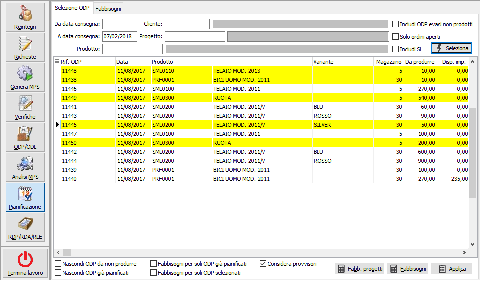
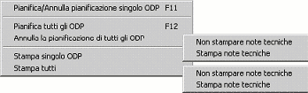
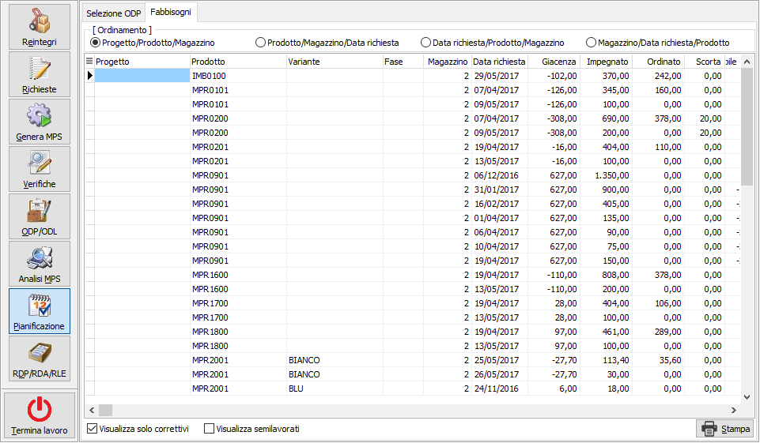
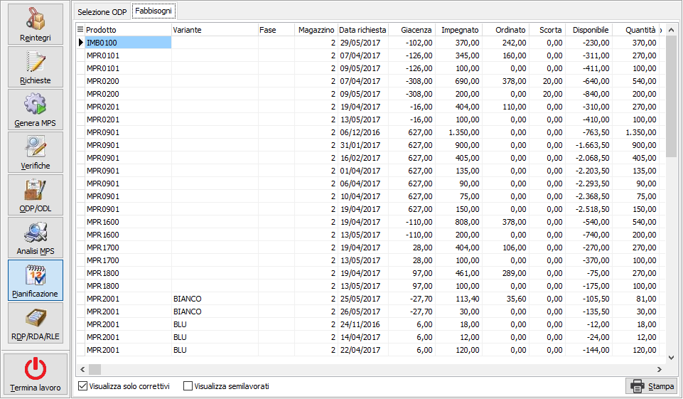

Pianificazione
La funzione di pianificazione provvede a rendere definitivi (e quindi non più modificabili) gli ODP provvisori (e di conseguenza anche i relativi ODL) ed a rendere visibili in tutta l'applicazione gli impegni in produzione dei componenti (materiali e semilavorati) e gli ordinati a produzione dei composti (prodotti finiti e semilavorati). La pianificazione si può eseguire solo se il piano è valido.
Viene proposta la data di fine elaborazione basandosi sui giorni presenti in configurazione, sono presenti dei limiti di selezione per consentire di visualizzare solo gli ODP di uno specifico cliente, prodotto o progetto, se gestito; è possibile includere, spuntando la relativa casella, anche gli ODP evasi, ma per cui non necessita produzione perchè già presenti in magazzino ed utilizzati; pianificare questo tipo di ODP non comporta l'avvio della produzione, ma soltanto il rendere definitivo l'utilizzo del prodotto. Se gestiti gli ordini aperti è possibile selezionare solo gli ODP derivanti da tali ordini tramite la casella "Solo ordini aperti". Nel caso siano gestiti i progetti e si inserisca un codice prodotto è possibile includere nella selezione eventuali semilavorati associati al progetto del prodotto richiesto apponendo la spunta sul parametro "Includi SL".
Dalla funzione è possibile anche annullare la pianificazione di ODP già pianificati (a condizione che non siano stati già lanciati).
Al termine della funzione di pianificazione è possibile ottenere il calcolo dei fabbisogni dei componenti (evidenziando le disponibilità negative nel tempo).
Il calcolo dei fabbisogni può essere fatto anche su ODP provvisori.


Nella parte bassa della finestra è presente la casella che consente di escludere gli ODP già in stato di pianificato, consentendo quindi una più semplice lettura degli ODP da pianificare e la casella che consente di nascondere gli ODP da non produrre, ovvero pianificati ma con la colonna Da produrre a zero, perchè già presenti in magazzino; sono inoltre presenti altre due caselle di spunta per indicare per quali ODP si vuole visualizzare il fabbisogno. Sono poi presenti i pulsanti per eseguire il calcolo dei fabbisogni, se gestito il progetto sulle RDA è possibile visualizzarli anche differenziati per progetto con l'apposito pulsante; c'è poi il pulsante Applica per eseguire effettivamente la Pianificazione o l'annullamento in base alla selezione degli ODP. Sulla griglia tramite il clic destro del mouse si accede al menù contestuale che contiene le funzionalità associate quali selezione e deselezione, singola o totale, stampa dell'ODP selezionato o di tutti gli ODP visualizzati. La casella "Considera provvisori" è utilizzata per il calcolo della disponibilità dei componenti selezionati; se spuntata vengono inclusi nel calcolo anche gli impegni dei componenti di ODP non pianificati, altrimenti considera solo gli impegni dei componenti relativi ai soli ODP pianificati (casella vuota).Premendo i pulsanti Fabbisogno o Applica si accede alla pagina dei Fabbisogni di cui riportiamo due esempi con la gestione dei progetti e generale; se si preme il pulsante Fabbisogni progetti, nella parte alta della finestra è presente un pannello che consente di modificare l'ordinamento dei dati visualizzati.
Nella parte bassa sono presenti due caselle di spunta; una per visualizzare tutti i fabbisogni o solo quelli che necessitano di correttivi: per correttivi si intendono i materiali per cui è necessario effettuare approvvigionamento e l'altra per visualizzare anche gli eventuali fabbisogni di semilavorati, che altrimenti non vengono mostrati; è inoltre presente il pulsante Stampa per stampare quanto visualizzato.
Fabbisogni progetti

Fabbisogni pianificazione
